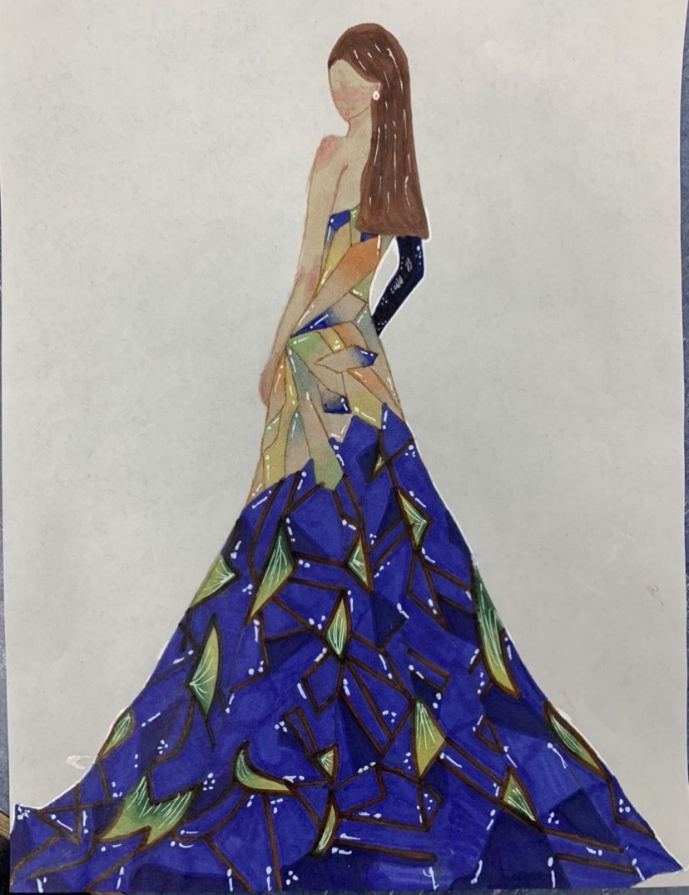

глава из романа «Ветруша»
🗺️ Карта и дорога

жду тебя
Когда она была маленькой, я держала её за руку и вела по карте. Я знала дороги: учёба, деньги, «так нужно». Я была ей и мамой, и папой — сначала в своей стране, потом в чужой. И моя тревога часто шла впереди нас обеих.
Только потом я поняла: карта даёт направление, но не даёт дороги. В темноте ребёнок чувствует не путь. Он чувствует, верит ли в него тот, кто держит его за руку.
Я верила. Всегда. Просто не всегда умела это показать.

3 годика 😊

семья, лето

бежит вперёд
В ночь перед её днём рождения пришёл Ветер.
— Ты всё ещё держишь её за руку? — спросил он.
— Нет. Я отпустила.
— Тогда почему твоя ладонь всё ещё тёплая?
— Потому что отпустить — не значит перестать любить.
— Но вы ведь столкнулись, — сказал Ветер. — Я видел.

— Мы — две звезды. Когда-то мы были одним светом. Так бывает со звёздами, которые горят слишком ярко, чтобы просто стоять рядом. Столкновение — тоже любовь: от него не гаснут, от него рождается новый свет. Теперь у каждой своя орбита, и это правильно.
Ветер помолчал.
— Значит, ты больше не держишь и не ведёшь.
— Любовь не держит и не ведёт. Любовь даёт право просто быть.
— Тогда я пролечу утром мимо её окна. Не скажу ни слова. Просто принесу тепло.
— Да, — сказала я. — Именно так.

своя орбита: её рисунок

её свет